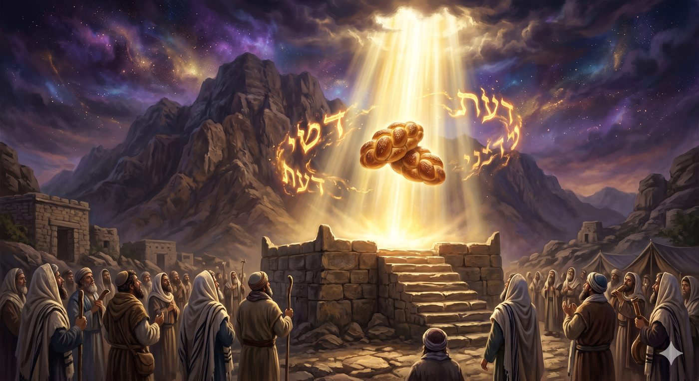
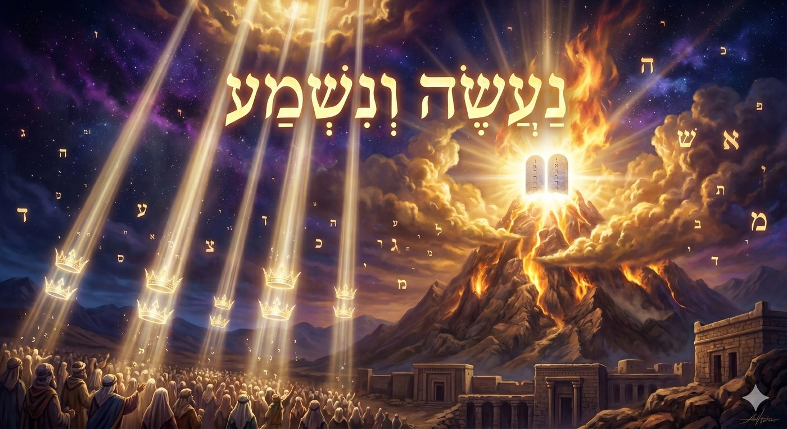
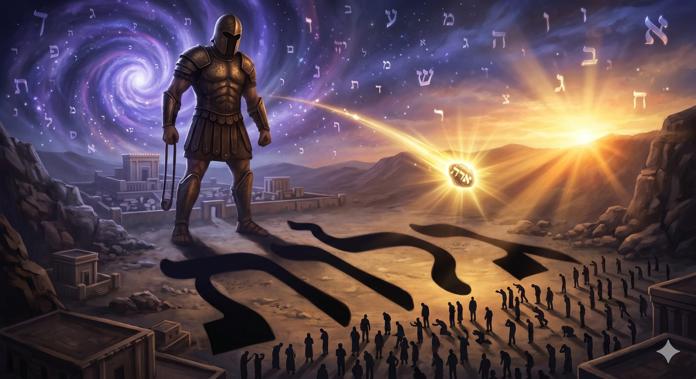
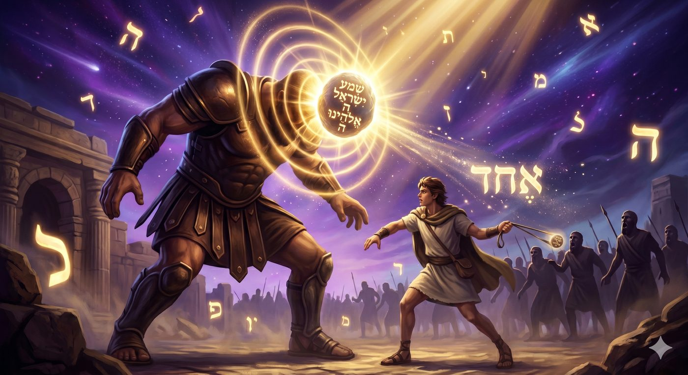
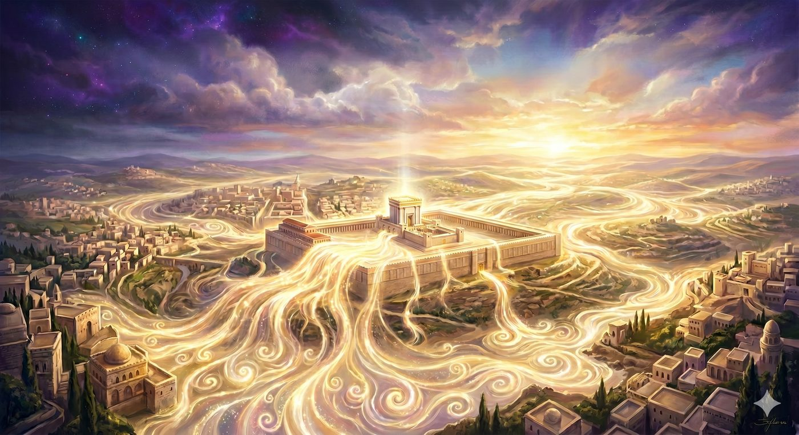

Le Daat, la connaissance qui unit
Chaque fête majeure du calendrier hébraïque est reconnaissable à distance. La matsa de Pessah' est tangible, son goût d'azyme ancre la liberté dans la chair. Le chofar de Roch Hachana déchire le silence de la synagogue et rappelle à chacun qu'il est mortel et désiré. La soucca enveloppe la famille de ses quatre parois fragiles. Le loulav est saisi et agité. Chavouot, elle, arrive les mains vides. Ou plutôt : elle ne vient rien déposer dans les mains, parce que ce qu'elle apporte ne se dépose pas.

On pourrait croire qu’il s’agit d’un simple oubli du codex des lois juives, le Choul’han Arouh’ mais les Rishonim ont naturellement proposé des réponses aux questions halah’iques que cette singularité soulève. Certains ont noté que les Chtei HaLeh'em (שְׁתֵּי הַלֶּחֶם, les deux pains levés apportés au Temple) constituaient autrefois l'objet central de la fête, mais que leur accomplissement est impossible en l'absence du Temple. D'autres soulignent que les quarante-neuf jours du compte de l'Omer sont la préparation, et qu'ils tiennent lieu de mitsva de saison. Ces réponses sont justes, et nécessaires. Mais elles ne disent pas tout. Elles expliquent l’absence d’un rite par des circonstances historiques. Elles ne disent pas pourquoi la Torah a voulu, dès l’origine et dans sa sagesse la plus profonde, que l’objet central de Chavouot soit précisément de cette nature-là ;Il faut s'arrêter sur une seconde singularité, aussi fondamentale que la première : Chavouot est la seule fête sans date fixe dans la Torah. Pessah' est le quinze Nissan. Roch Hachana est le premier Tichri. Souccot est le quinze Tichri. La Torah ne dit pas "le six Sivan vous célèbrerez Chavouot." Elle dit : comptez cinquante jours. La liturgie a retenu cette précision : nous disons Zeman Matan Toraténou, "le temps du don de notre Torah", et non Yom Matan Toraténou, "le jour de la donation." Rachi, citant le Midrach Tanhouma sur le verset "Ce jour, l'Éternel ton D.ieu te commande ces lois" (Devarim 26:16), l'exprime sans équivoque : "Chaque jour, elles doivent être à tes yeux comme neuves, comme si tu les recevais aujourd'hui du Sinaï." La Torah refuse de se laisser circonscrire à une date, parce qu'elle aspire à être reçue comme neuve chaque jour.
Le Kedouchat Lévi (Rabbi Lévi Yits'h'ak de Berditchev) tire des deux noms de la fête une leçon révélatrice. Chavouot (semaines) désigne le processus, le cheminement des quarante-neuf jours, le devenir. Atzeret (retenue, assemblée), le nom que la Guemara lui donne, désigne l'arrêt, l'accomplissement, la bascule de la quantité vers l'être. Chavouot sans Atzeret serait un devenir sans fin. Atzeret sans Chavouot serait un arrêt stérile. Ensemble, ils disent que le cinquantième jour est le moment où le travail humain et le regard divin se rejoignent, et qu’aucun geste particulier ne peut contenir ce qui se passe.
Mais c'est la réponse de la Hassidout qui va le plus loin. Le Sfat Emet, Rabbi Yehouda Aryé Leib Alter de Ger, formule l'idée à laquelle toute la tradition hassidique revient : Chavouot célèbre non pas un aspect de la relation entre D.ieu et Israël, mais cette relation elle-même. Cette réalité précède toute forme et toute différenciation. Le Zohar enseigne que "Oraïta veKoudcha Berih'ou h'ad hou" : la Torah, le Saint béni soit-Il, et Israël ne font qu'un. Une réalité aussi fondamentale ne se contient dans aucun récipient physique parce qu’on ne la reçoit pas comme on reçoit un objet, mais uniquement par la présence des âmes d’Israël.
Le paradoxe des Chtei HaLeh'em vient confirmer cette lecture d'une manière saisissante. Le pain levé, le h'ametz (חָמֵץ), symbole de l'ego enflé et de la déviation, est rigoureusement interdit sur l'Autel en toute autre circonstance. À Chavouot, il devient l'offrande principale. Cela ne dit pas que l'ego est acceptable à Chavouot mais que celui dont le Daat est rectifié peut alors offrir même ce qui était obstacle car la conscience unificatrice transmute la résistance de l’égo en un réceptacle qui permet d’acquérir la Torah. La fête sans objet propre est la fête de la conscience : Chavouot est la seule fête où l'on célèbre non pas ce que l'on fait mais ce que l'on devient, parce que la connaissance, le Daat de la Torah est lui-même le seul objet digne de cette rencontre.
Ce chiour propose, avec l'aide du Ciel, d'explorer le concept de Daat (דַּעַת), la connaissance unificatrice, comme clé de lecture de Chavouot. À travers le Zohar, le Sfat Emet, le Tanya de Rav Chneur Zalman de Liadi, le Nefesh HaH'aïm de Rav H'aïm de Volozhin et les derniers mots de la Guemara de Ménahot, nous tenterons de montrer que la Torah est le chemin de retour à l'Etz HaH'aïm (עֵץ הַחַיִּים, l'Arbre de Vie), que la Hanhagat HaYih'oud et la Hanhagat HaMichpat ne sont que les deux visages d'une seule conduite divine, et que chaque moment d'étude de Torah est, concrètement, un acte de sortie de l'exil intérieur.
La fête sans objet de mitsva : le Daat ne se saisit pas avec les mains
Daat : la connaissance qui unit, bien au-delà du simple savoir
Les deux arbres du Jardin : et s'ils n'avaient jamais cessé d'être Un ?
Hanhagat HaYih'oud et Hanhagat HaMichpat : deux Noms, une seule lumière du Daat
"Veyadata hayom..." : la descente du Daat de la tête au coeur
Galout HaDaat : de Pharaon à Goliath, l'exil de la conscience unificatrice
"Naassé venichma" et le Tikoune Leil Chavouot : le Daat qui précède la compréhension
David, roi de Chavouot : le Daat incarné dans la royauté et la bergerie
Daat messianique : la terre remplie de la connaissance de D.ieu comme les eaux couvrent la mer
" Ledaatrem zivrhou " : les derniers mots de Ménahot et le secret de Chavouot
Avant d’aller plus loin, il nous faut nous arrêter sur ce que signifie réellement le Daat dans la structure de l'âme humaine telle que la mystique juive la décrit. La Torah elle-même en donne la définition la plus précise au premier livre : "VeHaAdam yada et H'ava" (וְהָאָדָם יָדַע אֶת-חַוָּה), "Et Adam connut H'ava (Ève)" (Berechit 4:1). Le Daat est la connaissance la plus intime qui soit entre deux êtres, celle qui ne laisse plus de distance entre celui qui connait et celui qui est connu. C'est une union, bien au-delà de la simple accumulation de savoir ou de la maîtrise d'un domaine.
Dans la structure des dix attributs divins, le Daat occupe une position singulière. Il est le pont invisible entre les attributs spirituels H'oh'mah (חָכְמָה, la Sagesse, l'intuition primordiale) et Binah (בִּינָה, l'Intelligence, la compréhension développée), d'un côté, et les sept attributs affectifs et actifs de l'âme, de H'essed (la bonté) jusqu'à Malh'out (la royauté), de l'autre. Sans Daat, la lumière de la connaissance reste suspendue dans les hauteurs de l'intellect abstrait et ne descend jamais irriguer la vie concrète, le ressenti quotidien, le comportement humain.
Le Tanya de Rav Chneor Zalman de Liadi (Likkouté Amarim, chapitre 3) développe ce point. Imaginez : un homme peut connaître toute la théologie du monde, réciter le Chema Israël deux fois par jour, et néanmoins vivre comme si D.ieu n'existait pas, comme si chaque événement de sa vie n'était que le produit des lois aveugles de la nature. Il n’est évidemment pas athée, mais son Daat est brisé, parce que le pont entre sa connaissance intellectuelle et sa vie intérieure la plus profonde s’est effondré. Chacun de nous, à un moment ou un autre, a connu ce sentiment : savoir sans ressentir, croire sans vivre. C’est précisément cet état de rupture que la mystique juive nomme le Galout HaDaat (גָּלוּת הַדַּעַת), l'exil de la conscience, et nous y reviendrons.
Le Nefesh HaH'aïm de Rav H'aïm de Volozhin (Chaar IV, chapitre 1) ajoute une dimension que le Tanya n'explicite pas sous cette forme. Le Daat n'est pas seulement le pont entre intellect et affect mais il est la faculté par laquelle l'Homme participe réellement à la vie divine. Quand le Daat est actif, l'étude de la Torah n'est pas la mémorisation d'un texte : c'est une rencontre vivante avec le Divin, une réception en temps réel de la lumière du Sinaï. Quand le Daat est endormi, la Torah peut être récitée par cœur sans que son étincelle divine ne touche jamais l'âme.
Il me semble utile de remarquer que la structure du mot Daat (ת-ע-ד) porte en elle-même une signification. Le Dalet (ד) est la lettre de l'humilité, de la pauvreté (Dal), de la porte qui s'ouvre vers le bas. L'Aïn (ע) est la lettre de l'œil, du regard, de la perception directe. Le Tav (ת) est la dernière lettre de l'alphabet, la lettre de la complétude et du scellement. Le Daat est ainsi la perception humble qui mène à la complétude. Il commence par s'abaisser et se termine par se sceller dans l'être.
Seul le Daat, la connaissance vécue et unificatrice, peut transformer la connaissance de D.ieu en présence de D.ieu : c'est le don que Chavouot nous offre et la condition qu'elle exige.
Avant la faute originelle, l'état de conscience d'Adam est celui de l'Etz HaH'aïm (עֵץ הַחַיִּים, l'Arbre de Vie). La Torah décrit le Jardin d'Éden avec soin : deux arbres se tiennent au centre du jardin, l'Arbre de Vie et l'Arbre de la Connaissance du Bien et du Mal (Berechit 2:9). Ils ne sont pas à la périphérie, relégués dans un coin : ils occupent le centre. Ils représentent deux modes d'être, deux manières pour la réalité divine de se donner à percevoir dans le monde.
L'Etz HaH'aïm est l'état de conscience dans lequel tout est perçu comme émanant directement de la volonté divine, où la dualité bien-mal n'existe pas encore comme tension déchirante, où l'homme vit dans la clarté de l'unité. C'est l'état du Daat parfait, de la connaissance de D.ieu qui n'est pas une opinion mais une expérience permanente. Selon le Zohar (I, 27a) cet Arbre représente la Malh'out (la royauté divine) qui s'alimente directement aux sources supérieures sans intermédiaire.
Or voici ce qui est, à mes yeux, selon l’enseignement de mon Rav (consulter le livre « verbe intime »), la vérité la plus saisissante de la Torah : ces deux arbres ne sont pas, en leur essence ultime, deux réalités séparées. Le Etz HaDaat n'est pas l'opposé de l'Etz HaH'aïm. Il en est le vêtement provisoire, l'enveloppe que prend la lumière de l'Arbre de Vie lorsqu'elle descend dans un monde où le mélange règne. J'ajouterais ici, en m'appuyant sur l'enseignement du Ramh'al dans le Da'at Tevounot que la Hanhagat HaYih'oud (la conduite du monde par l’unité divine) ne s'oppose pas à la Hanhagat HaMichpat (la conduite du monde par les lois naturelles) : elle la contient, elle la fonde, elle la traverse de part en part. La rigueur du monde (et tout ce que cela implique en matière de souffrance humaine) n'est que la miséricorde infinie revêtue d'un habit de justice.
Chavouot est précisément la fête du dévoilement de cette vérité. Ce n'est pas Pessah' qui révèle l'unité des Noms : Pessah' révèle la puissance de Havayah sur Elokim, le miracle contre la nature. C'est Chavouot qui révèle que les deux n'ont jamais été en opposition. Le don de la Torah au Sinaï est le moment où D.ieu dit : voici le chemin qui traverse l'Etz HaDaat, voici la Torah comme mode d'existence dans le monde du mélange, jusqu'à ce que l'homme qui accomplit chaque Birour (בֵּירוּר, discernement actif de la lumière dans la matière) réalise, depuis l'intérieur même du Etz HaDaat, que les deux arbres n'ont jamais cessé d'être Un.
La Torah ne contourne pas le monde du mélange : elle le traverse jusqu'à ce que le Etz HaDaat révèle en lui-même la lumière permanente du Etz HaH'aïm, car les deux arbres ne sont que les deux visages d'une seule et même réalité divine.
Il existe une formulation dans notre tradition qui cristallise à elle seule toute la définition du Daat accompli. Elle apparaît à la fin de la vie de Moché Rabenou, dans son dernier discours au peuple d'Israël : "Veyadata hayom veha'chevota el levaveh'a ki Hachem Hou HaElokim" (וְיָדַעְתָּ הַיּוֹם וַהֲשֵׁבֹתָ אֶל-לְבָבֶךָ כִּי ה' הוּא הָאֱלֹהִים), "Et tu sauras aujourd'hui, et tu le ramèneras jusqu'à ton coeur : que Hachem est Elokim" (Devarim 4:39). Remarquons la structure du verset : la yediah (la connaissance) doit voyager de la tête au cœur. C'est précisément la définition du Daat. Savoir et ramener au cœur sont deux actes distincts, et Moché Rabenou, à la fin de sa vie, nous engage sur la résolution de cette équation.
La distinction entre les deux Noms divins est fondamentale dans la pensée juive. Le Tétragramme, que nous prononçons Hachem, désigne D.ieu dans Sa transcendance absolue, Sa miséricorde infinie, Sa réalité qui transcende tout cadre temporel et causal : c'est la Hanhagat HaYih'oud (הַנְהָגַת הַיִּחוּד, la conduite de l'Unité absolue). Elokim, au contraire, désigne D.ieu tel qu'Il se manifeste dans et à travers les lois de la nature, dans la rigueur, dans le cadre fini et déterminé du monde créé : c'est la Hanhagat HaMichpat (הַנְהָגַת הַמִּשְׁפָּט, la conduite par les lois). Pour l'œil non averti, pour la conscience fracturée, exilée, ces deux modalités semblent contradictoires.
C'est précisément cette fracture de perception que la mystique juive désigne comme l'essence même de l'exil. Pharaon en Égypte en est l'archétype : il proclame "Mi Hachem ?" מִי ה, "Qui est Hachem ? Je ne Le connais pas", Chémot 5:2. Pharaon ne nie pas l'existence des forces de la nature. Il admet parfaitement Elokim, la réalité des lois physiques. Ce qu'il refuse, c'est Hachem, la transcendance libre qui gouverne ces lois et les dépasse. Son Galout HaDaat est total : il perçoit un D.ieu absent de Ses propres créations.
Le Daat accompli perçoit quelque chose de plus radical que le simple fait que D.ieu "a plusieurs visages". Il perçoit que la Hanhagat HaYih'oud est la réalité unique et absolue, et que la Hanhagat HaMichpat n'en est que le dévoilement dans le langage du monde fini. Le miracle ne s'oppose pas à la nature : la nature est le miracle vu de l'intérieur. La rigueur d'Elokim n'est pas une limite à la miséricorde de Hachem : elle en est l'expression dans le monde de la multiplicité. C'est cette perception que D.ieu cherche à instaurer dans les cœurs d'Israël au Sinaï, et c'est cette perception que Chavouot nous convie à retrouver chaque année.
Percevoir que Hachem est Elokim, c'est comprendre que la Hanhagat HaYih'oud contient et fonde la Hanhagat HaMichpat : il n'y a qu'une seule conduite du monde, et le Daat la révèle sous deux visages qui ne cessèrent jamais d'être Un.
"Veyadata hayom veha'chevota el levaveh'a" (Devarim 4:39) est un verset que nous avons posé comme clé de tout ce chiour, mais il recèle encore d'autres dimensions. La première chose qui frappe est le hayom, "aujourd'hui." Non pas "un jour", non pas "progressivement" : aujourd'hui. Il y a dans cette urgence temporelle une injonction qui ne souffre pas de délai. La connaissance de l'unité divine n'est pas un horizon lointain que l'on approche par degré : c'est une exigence du présent.
La seconde chose qui frappe est le verbe ha'chevota : "et tu le ramèneras." Le Daat ne se possède pas, ne se stocke pas dans une bibliothèque. Il se ramène chaque jour, se réveille chaque matin, la connaissance de l'unité divine doit être ramenée de la tête jusqu'au cœur. C'est un travail permanent, et non pas un acquis définitif. Moché Rabenou, à la fin de sa vie, dit cela à un peuple qui vient de traverser quarante ans de révélations et de miracles. Il leur dit : maintenant que vous avez tout vu, ramenez-le jusqu'au cœur. Le cœur doit absorber ce que la tête a reçu.
Les quarante-neuf jours du compte de l'Omer sont précisément le chemin de cette descente. Chaque semaine du compte travaille une Sefirah émotionnelle : la première semaine rectifie le H'essed (l'amour), la deuxième la Gevoura (la rigueur), et ainsi de suite jusqu'à Malh'out (le rayonnement vers le monde). Les quarante-neuf jours de l'Omer sont le passage méthodique de la tête au cœur, la migration du Daat depuis l'intellect vers les territoires de la vie affective et pratique.
Le Bné Issah’ar (Rabbi Tsvi Elimelekh Shapira de Dinov, Maamarei H'odech Sivan) enseigne que le mois de Sivan, mois de Chavouot, correspond à la Sefirah de Binah dans le calendrier hébraïque. Mais le Daat n'est pas Binah : il est le pont qui permet à Binah de "descendre" vers les Sefirot inférieures. En recevant la Torah au mois de Sivan, Israël effectue précisément le geste de "ramener jusqu'au cœur" : la lumière de Binah descend par le canal du Daat pour irriguer toute la vie intérieure.
"Veyadata hayom veha'chevota el levaveh'a" est la définition même du chemin de Chavouot : savoir n'est que le commencement, c'est la descente du savoir jusqu'au cœur qui constitue le Daat accompli et fait que la Torah n’est pas un livre poussiéreux mais l’âme de nos vies.
Au chapitre 24 du livre de Chémot, verset 7, Israël prononce ce qui est peut-être la formule la plus paradoxale de toute la tradition juive : "Naassé venichma" (וְנִשְׁמַע נַעֲשֶׂה), "Nous ferons et nous entendrons." Comment peut-on s'engager à "faire" avant même d'avoir "entendu" ce qu'on devra faire ? Comment souscrire à un contrat dont on n'a pas encore lu les clauses ?
Le Talmud Bavli (Chabat 88a) rapporte que lorsqu'Israël prononça ces mots, six cent mille anges ministrants descendirent et posèrent deux couronnes sur la tête de chaque Israélite : une couronne pour le naassé et une couronne pour le nichma. Une voix céleste sortit et proclama : "Qui a révélé à mes enfants ce secret que les anges eux-mêmes utilisent ?" Les anges, en effet, font toujours avant d'entendre : leur obéissance précède leur compréhension. En prononçant naassé venichma, Israël atteignit momentanément le niveau des anges.
Du point de vue mystique, naassé correspond à la Sefirah de Malh'out (le concret, l'action) et nichma correspond à Binah (l'intelligence, la compréhension). En plaçant Malh'out avant Binah, Israël effectuait un mouvement "de bas en haut" (itaaruta diletata, l'élan d'en bas), qui est, selon le Zohar, la condition pour que la lumière d'en haut puisse descendre. On agit d'abord, et D.ieu envoie ensuite la compréhension. L'action est la clé qui ouvre la chambre de l'intelligence et c'est précisément la définition du Daat.

La coutume du Tikoune Leil Chavouot plonge ses racines dans un épisode rapporté par le Midrach Chir HaChirim Raba : à la veille de la révélation du Sinaï, le peuple d'Israël s'endormit profondément, et D.ieu dut les réveiller à l'aube par des tonnerres et des éclairs. Ce sommeil appelait une rectification (tikoun). Le Ari (Rabbi Its’h’ak Louria) de Safed ancra au XVIe siècle la pratique de rester éveillé toute la nuit pour étudier, et cette pratique nous est parvenue intacte. Rester éveillé à Chavouot, c’est transformer le signe de l’inertie en signe du désir : cette nuit-là, nous disons avec nos corps ce que nous désirons dire avec nos âmes. Aucun sommeil ne nous séparera de la Torah.
"Naassé venichma" est la formule du Daat parfait : s'engager dans la Torah avant d'en avoir saisi tous les contours, parce que certaines vérités ne se donnent qu'à ceux qui ont eu le courage de les accueillir avant de les comprendre.

Notre tradition recèle, au détour d'un récit historique en apparence éloigné de Chavouot, une révélation d'une précision stupéfiante. Ceux qui lisent l'hébreu le voient d'un seul regard : le nom du géant philistin que David affronta dans la vallée s'écrit Goliath (גָּלְיָת), et la condition existentielle de tout peuple arraché à sa conscience divine s'écrit Galout (גָּלוּת). Nous retrouvons les mêmes lettres racines, dans ces deux mots avec la même résonance. Dans la langue hébraïque, les correspondances de lettres sont des révélations : Goliath est la Galout, la personnification armée et arrogante.
Mais le Galout HaDaat commence bien avant David. Il commence avec Pharaon et son "Mi Hachem ?" Il prend un visage plus terrible encore avec Goliath qui, selon le texte de Samuel (I Samuel 17:16), se présente quarante jours de suite, matin et soir, face aux rangs d'Israël paralysés incapables de réciter le Chema Israel. Quarante jours : le même nombre que les quarante jours et quarante nuits que Moché Rabenou passa sur le Sinaï pour recevoir la Torah. Le nombre quarante est le nombre de la gestation, de la transformation intérieure. Quarante jours de Goliath signifient quarante jours d'une paralysie spirituelle totale.
Pendant tout ce temps, Israël ne pouvait proclamer Hachem Hou HaElokim. La déclaration centrale du Chema Israël, l'unification des deux Noms divins qui est l'essence même du Daat, fut suspendue, bloquée, rendue inaudible par le rugissement du géant. Le Galout HaDaat avait trouvé son visage : un visage recouvert d'airain, hurlant à l'aube et au crépuscule, pendant exactement le même temps que Moché Rabenou avait mis à recevoir la Torah.
Ce rapprochement ne tient pas du jeu de lettres. Il révèle quelque chose de profond sur la nature même de l’exil intérieur : le Galout HaDaat n'est pas un ennemi extérieur à abattre par la force, mais un état de conscience à traverser par la rectification du Daat. L'homme qui étudie la Torah sans Daat ressemble à Israël paralysé devant Goliath : il sait ce qu'il doit faire, il connaît les lois, il récite les textes. Mais le géant de l'habitude, de l'anesthésie spirituelle, de la routine mécanique se présente chaque matin et chaque soir et le paralyse. Le Galout HaDaat est la paralysie de l'âme qui connaît D.ieu par la tête mais ne Le vit pas par le coeur : Goliath et Galout ne font qu'un, et c'est le Daat de David qui abat l'un et libère de l'autre.
La tradition enseigne que le roi David, David HaMeleh’ (דָּוִד הַמֶּלֶךְ), naquit et mourut le jour de Chavouot. Cette coïncidence biographique n'en est pas une. Dans la pensée mystique, les grandes figures de la Torah incarnent des réalités spirituelles. La naissance et la mort de David à Chavouot le disent sans ambiguïté : David est l'homme qui porte le Daat torah (même s’il est intrinsèquement le roi, la malh’out), et Chavouot est la fête de la réception du Daat, de la connaissance.
Commençons par le nom lui-même. David (דָּוִד) est composé de deux Dalet encadrant un Vav. Or la Dalet est la lettre de l'humilité et de la pauvreté, le nom de cette lettre signifie "porte" et une porte s'ouvre depuis l’extérieur traverse un Vav, la lettre du lien, du pont, de la verticalité qui unit le Ciel à la terre, pour atterrir à l’intérieur d’une pièce (l’autre Dalet apparait alors). David est structurellement un être de Daat : sa constitution intérieure est d'être le pont vivant entre les hauteurs divines et les profondeurs de la condition humaine. Il est le roi-berger, le guerrier-poète, l'auteur des Tehilim (Psaumes) et le meneur d'armées d’Israël.
En David, la Hanhagat HaYih'oud portée par Havayah et la Hanhagat HaMichpat portée par Elokim ne sont pas deux personnages qui coexistent : elles sont deux expressions de la même lumière divine, perçues dans l'unité du Daat. Le roi qui juge et le berger qui aime ses moutons ne font qu'un. La guerre contre Goliath et le chant des Psaumes jaillissent de la même source.

Or voici ce qui me frappe dans le récit de ce combat, et j'ajouterais ici une lecture de mon Rav, qui me semble porter une vérité profonde. Le texte de Chmouel (I Chemouel 17:40) rapporte que David choisit cinq pierres lisses dans un torrent avant d'affronter le géant. Ces cinq pierres correspondent, aux cinq premiers mots du Chema : Chema (1), Israel (2), Hachem (3), Elokeinou (4), Hachem (5). Le sixième mot, Eh'ad (l'Un), n'est pas une sixième pierre : il est la synthèse qui surgit lorsque les cinq premiers s'unissent en un seul élan.Car c'est précisément la proclamation du Chema Israel qu'Israël n'arrivait plus à prononcer face à Goliath. Quarante jours que le géant se présentait. Quarante jours qu'un peuple qui connaissait la Torah ne parvenait plus à unifier les deux Noms divins sur ses lèvres. Le Galout HaDaat avait exactement cette forme : la bouche paralysée, les mots du Chema figés dans la gorge, séparés les uns des autres par la terreur.
David ramassa les cinq pierres et les rassembla dans sa fronde. Il reconstitua physiquement ce que la peur avait désuni. Et il envoya les cinq mots d'un seul souffle vers le front du géant, ce metsa'h (מֵצַח, front) qui est dans la tradition hébraïque, lorsqu’il est mal utilisé le siège de l'arrogance et du refus de reconnaître le divin, de l’effronterie. En abattant Goliath, David rendit à Israël la possibilité de crier à nouveau, les deux Noms unis sur les lèvres : Hachem Hou HaElokim. La pierre était la rectification du Daat collectif d'un Am Israel qui n'arrivait plus à prononcer son propre symbole de foi.
Il faut s'arrêter sur ce geste de la pierre, parce qu'il dit beaucoup de choses. Le texte de Chmouel (I Samuel 17:40) rapporte que David choisit cinq pierres lisses dans le torrent. Les commentateurs ont relevé la singularité du nombre. Le Maharal de Prague y voit les cinq livres de la Torah : David ne lança pas une arme, il lança la Torah elle-même. D'autres relient ce nombre aux cinq lettres finales de l'alphabet hébreu, les otiot sofiot (אותיות סופיות, ם ן ץ פ ך), qui représentent la puissance divine en état de contraction dans le monde. Dans les deux lectures, la pierre est une lettre, et la lettre est une force spirituelle, et non une force physique. La pierre, en hébreu even (אֶבֶן), porte en elle une révélation de structure. Le Zohar observe que ce mot contient av (אָב, père, les deux premières lettres) et ben (בֵּן, fils, les deux dernières). L'even est le lieu où le père et le fils se rejoignent. Elle est, dans le langage des attributs divins, le point de Daat lui-même, ce pont entre H'oh'mah (la Sagesse) et Binah (l'Intelligence).
David lança le Daat Torah au front du géant. Et c'est précisément au front que la pierre s'enfonça : "Vatib'a haeven bemiths'ho" (וַתִּטְבַּע הָאֶבֶן בְּמִצְחוֹ), "La pierre s'enfonça dans son front" (I Samuel 17:49). Le metsa'h (מֵצַח), le front, est dans la tradition hébraïque le siège de l'azout (עַזּוּת), l'arrogance éhontée. C'est le front que Pharaon opposait à Moché Rabenou. C'est le front que le Galout HaDaat expose toujours en premier : cette certitude du monde matériel de n'avoir pas de compte à rendre, de n'être gouverné par aucune transcendance. David n'abattit pas Goliath par la force des bras. Il lui enfonça le Daat dans le front. Et Goliath tomba face contre terre, comme si, au moment de mourir, il s'inclinait malgré lui devant ce qu'il avait quarante jours durant refusé de reconnaître.
En abattant Goliath, David dénoue le nœud du Galout HaDaat, il rend à Israël la possibilité de crier à nouveau, les deux Noms unis sur les lèvres, Hachem Hou HaElokim.
La coutume de lire le Sefer Ruth à Chavouot révèle une même facette de ce lien entre David et le Daat de la fête. Ruth la Moabite est l'ancêtre direct de David, et son parcours est le modèle même du Daat en acte. Lorsqu'elle dit à Naomi (la Bina) : "Où tu iras, j'irai, où tu demeureras, je demeurerai, ton peuple sera mon peuple et ton D.ieu sera mon D.ieu" (Ruth 1:16), elle prononce les paroles les plus proches qui soient du naassé venichma : un engagement total avant toute compréhension, une conversion du cœur qui précède la conversion formelle. On ne peut qu’être touché par cette femme moabite qui, d’un mot, traverse des siècles de frontières. La lignée messianique de David naît d’une guéra (convertie) dont le Daat fut si pur qu'il traversa toutes les frontières du peuple et de la langue pour atteindre l'essence. Lire Ruth à Chavouot, c'est rappeler que le retour à l'Etz HaH'aïm n'est pas réservé à ceux qui y sont nés : il est ouvert à toute âme dont le Daat est assez ardent pour franchir ses propres limites.
David naquit et mourut à Chavouot parce qu'il était l'incarnation vivante du Daat, ce pont entre la Hanhagat HaYih'oud et la Hanhagat HaMichpat, ce berger-roi dont la lignée, née de Ruth, témoigne que le Daat n'a pas de frontière.
La prophétie d'Isaïe concernant le Machia’h désigne le Daat comme l'une de ses caractéristiques fondamentales : "Venahh'ah alav Rouah' Hachem, Rouah' H'oh'mah ouVinah, Rouah' Etsah ouGuevoura, Rouah' Daat veYirat Hachem" (וְנָחָה עָלָיו רוּחַ ה', רוּחַ חָכְמָה וּבִינָה, רוּחַ עֵצָה וּגְבוּרָה, רוּחַ דַּעַת וְיִרְאַת ה), "Et se reposera sur lui l'Esprit de D.ieu, l'Esprit de Sagesse et d'Intelligence, l'Esprit de Conseil et de Force, l'Esprit de Connaissance et de Crainte de D.ieu" (Yechayahou 11:2). Six attributs sont nommés, et le Daat précède immédiatement la Yirat Hachem puisqu’il la fonde.
Mais c'est le verset 9 du même chapitre qui révèle la nature radicale de l'ère messianique : "Malea ha-aretz Daat et Hachem kamayim layam meh’asim" מָלְאָה הָאָרֶץ דֵּעָה אֶת-ה' כַּמַּיִם לַיָּם מְכַסִּים, "La terre sera remplie de la connaissance de D.ieu comme les eaux couvrent la mer" (Yechayahou 11:9). Remarquons ce que dit ce verset et ce qu'il ne dit pas. Il ne dit pas que la terre connaîtra D.ieu : il dit qu'elle en sera remplie, malea, comblée à ras bord. Il ne dit pas que quelques sages auront ce Daat : il dit qu'il sera aussi naturel et omniprésent que l’eau dans la mer.

Ce verset décrit le retour à l'état de l'Etz HaH'aïm. À l'ère messianique, le passage obligé par l'Etz HaDaat, ce détroit laborieux du discernement entre bien et mal, ne sera plus nécessaire, pas parce que le mal aura disparu par décret divin, mais parce que la conscience humaine sera si pénétrée de la présence divine que le bien et le mal cesseront d'être mélangés dans la perception de l'âme.
Chavouot, chaque année, est une anticipation vivante de cet état. Le Sfat Emet enseigne que Chavouot est le moment où la lumière primordiale du Sinaï se déverse à nouveau sur le monde, offrant à chaque âme, sans exception, sans condition de niveau ou de mérite, la possibilité de toucher, même furtivement, la conscience du Etz HaH'aïm. Cette lumière est disponible chaque année, la question est de savoir si nous avons accompli, dans les quarante-neuf jours précédents, le travail de purification qui nous rend capables de la recevoir.
Permettez-moi une parenthèse sur notre époque, car elle me semble nécessaire. Notre génération a ses propres Goliath : l’accélération permanente du monde, la surcharge informationnelle, les promesses de l’intelligence artificielle qui offre le résultat sans le labeur, les biotechnologies régénératives qui promettent le corps sans l’effort. Ces outils ne sont pas mauvais en eux-mêmes, ils ont leurs usages nobles, et nous serions naïfs de les diaboliser. Mais le Daat ne se délègue pas. Il ne s'optimise pas. Il se ramène, chaque jour, de la tête jusqu'au cœur, selon la formule de Moché Rabenou.
Chaque Chavouot est un prélude messianique : un instant où la terre se souvient qu'elle aspire à être remplie de la connaissance de D.ieu comme les eaux couvrent la mer, et où chaque âme peut toucher la conscience de l'Etz HaH'aïm retrouvé.
Nous voici au terme de ce chiour. Je souhaite le conclure par un enseignement que je tiens pour l’un des plus lumineux de toute la littérature talmudique, et peut-être le plus inattendu comme clé de Chavouot : les derniers mots de la Guemara de Ménahot (מְנָחוֹת, qui traite des Offrandes de farine). Précisons que le lien entre ce traité et Chavouot n'est pas fortuit. C'est dans le traité de Ménahot que la Torah traite des Chtei HaLeh'em, les deux pains levés offerts au Temple le jour de Chavouot. Mais la véritable connexion se trouve à la toute fin du traité, au folio 110.
Le texte commence par une scène humble et bouleversante. Un homme très pauvre vint apporter une offrande au Temple : une minhah (מִנְחָה, offrande de farine) dont la quantité était si modeste qu'un cohen la regarda avec mépris. Rabbi Chimon ben Lak'ich intervint pour lui rappeler le verset du Lévitique (2:1) : "Quand une âme présentera une offrande..." La Torah dit "une âme", et non "un homme." Parce que pour celui qui n'a pas les moyens d'apporter plus, c'est véritablement son âme entière qu'il dépose sur l'Autel. Devant D.ieu, l'intention et l'effort de l'âme comptent infiniment plus que la quantité.
Rav Yits'h'ak demande : "Que nous apprend le verset 'Zot torat haolah, haminhah, hah'atat vehaacham...' (זֹאת תּוֹרַת הָעֹלָה הַמִּנְחָה הַחַטָּאת וְהָאָשָׁם, Vayikra 7:37) ?" Et il répond : "Kol haoseik beTorah haolah, maale alav hakatuv keilu hikrib olah" (כָּל הָעוֹסֵק בְּתוֹרַת עוֹלָה מַעֲלֶה עָלָיו הַכָּתוּב כְּאִלּוּ הִקְרִיב עוֹלָה), et ainsi pour chaque sacrifice. La traduction est bouleversante dans sa simplicité : "Quiconque s'engage dans la Torah de l'holocauste, le verset lui attribue comme mérite d'avoir apporté un holocauste. Quiconque s'engage dans la Torah de l'offrande de farine, le verset lui attribue comme mérite d'avoir apporté une offrande de farine."etc…
Arrêtons-nous un instant. Après des dizaines de pages sur les offrandes, les mesures, les procédures, voici ce que la Guemara choisit de nous préciser. Ce n’est pas une conclusion anodine : ce sont la clé de Matan Torah tout entier. "Zot haTorah la'olah" ne dit pas seulement : voici les lois de la Ola, l'holocauste mais dit que la Torah elle-même est l’holocauste. La Torah que D.ieu donna au Sinaï est, le sacrifice ultime, la connexion directe entre l’homme et D.ieu, qui font une place en eux pour accueillir l’autre et le connaitre, bien au-delà de tout objet rituel particulier ou même de temps.
Le Nefesh HaH'aïm de Rav H'aïm de Volozhin (Chaar IV) nous permet d’en tirer une conclusion radicale : chaque Juif qui ouvre un livre de Torah, où qu'il se trouve et dans quelque condition qu'il soit, accomplit un acte dont la réalité spirituelle est aussi profonde que l'allumage du feu sur l'Autel. La Torah n'est pas un texte qui "représente" la connexion avec D.ieu. Elle est la connexion. Elle est le Etz HaH'aïm lui-même, rendu accessible à chaque âme, sans condition de richesse, sans nécessité de Temple, sans exigence d'un objet particulier.
La Guemara conclut cependant par une condition d'accès. La dernière michna loue ceux qui étudient les lois du sacrifice et leur attribue le mérite de les avoir offerts, puis elle pose une phrase qui, à elle seule, condense le cœur de ce chiour : « Vous l'abattrez selon votre volonté, vous l'abattrez avec votre conscience ». Votre conscience : votre Daat, Ledaath'em tizbeh'ouhou. Vous étudierez la torah, vous pratiquerez les mitsvot selon votre connaissance en y mettant votre attention votre cœur.
Les sages nous enseignent que la paracha de Bamidbar, dont l'objet est principalement le recensement des Bnei Israël, est toujours lue juste avant Chavouot. Ce rapprochement n'est évidemment pas fortuit, il nous enseigne que chaque Bnei Israël est un kéli, une lettre de la Torah. Et de même que D.ieu a écrit un Sefer Torah avant le Don de la Torah (toujours dans Ménahot), avant chaque Chavouot, pour lier chaque juif à sa Torah, D.ieu attend de nous que nous nous préparions et que nous ayons l’intention de recevoir sa Torah.
Car oui, la Torah est accessible à tous. Oui, elle est prête à être reçue par les Bnei Israël à chaque Chavouot, chaque jour, à chaque instant. Mais encore faut-il prendre la pleine mesure de cet enjeu. Encore faut-il poser une intention, celle d’offrir son Daat pour la connaissance de la Torah, pour la connaissance de Sa Volonté, pour se connaître soi-même, pour acquérir le Etz HaH'aïm.
"Kol haoseik beTorah, maale alav hakatuv keilu hikrib korban"
"Quiconque s'engage dans la Torah, le verset lui attribue comme mérite d'avoir apporté un sacrifice" (Ménahot 110a fin du Traité de Menah’ot)
De nous accorder en ce Chavouot de rouvrir en nos âmes le canal du Daat authentique, celui qui relie l'intellect au cœur, le Ciel à la terre, la transcendance de Hachem à l'immanence d'Elokim.
De nous permettre de percevoir, derrière le voile inévitable de l'Etz HaDaat, la lumière permanente de l'Etz HaH'aïm, et de comprendre dans notre chair que la rigueur du monde n'est que la miséricorde de D.ieu revêtue d'un habit de justice.
De nous accorder que chaque moment d'étude de Torah soit pour nous une véritable réception du Sinaï, et que cette étude accomplie avec Daat soit reçue devant D.ieu comme l'apport du sacrifice le plus précieux.
De nous permettre d'abattre, chaque matin et chaque soir, le Goliath intérieur de l'habitude et de l'anesthésie spirituelle, et de rendre à nos lèvres et à nos cœurs la proclamation : Hachem Hou HaElokim.
De nous permettre de voir bientôt la terre remplie de la connaissance de D.ieu comme les eaux couvrent la mer, avec l'arrivée du Machiah fils de David, roi de Chavouot, rapidement et de nos jours.
Hag Chavouot Sameah' ! Chabbat Chalom !
Rédigé par B.A., à Saint-Mandé le 7 Sivan 5786. Réflexions écrites avec beaucoup d'humilité et l'aide de D.ieu.
SOURCES
|
|---|